Galería
Todo el material gráfico del sitio reunido en un solo lugar, organizado por los cuatro ejes: los mundos que visita la expedición Endurance, sus personajes, la ciencia real que sostiene la historia y el viaje por el espacio y el tiempo. Cada imagen enlaza a su versión completa y su fuente está en la página de créditos.
Mundos
Ir a la página de Mundos-

La Tierra entera, la fotografía «Blue Marble» de la NASA. Eje Mundos. -
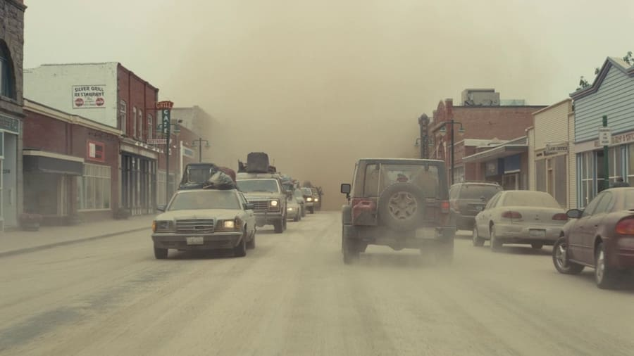
La Tierra moribunda: una tormenta de polvo cubre el pueblo. Eje Mundos. -
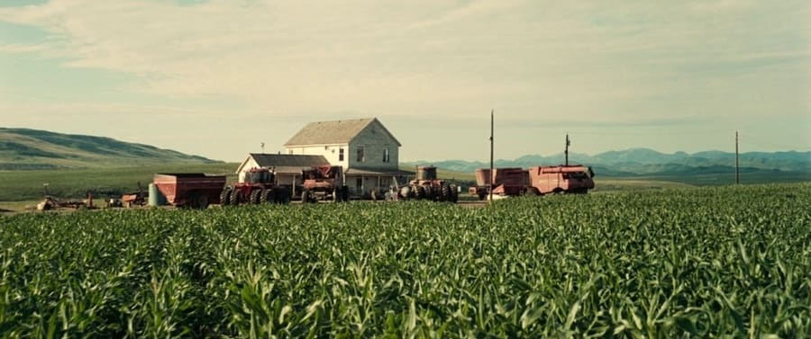
La granja de los Cooper, entre el maíz que todavía crece. Eje Mundos. -

Gargantúa domina el sistema al otro lado del agujero de gusano. Eje Mundos. -

El planeta de Miller, un mundo de océano poco profundo. Eje Mundos. -
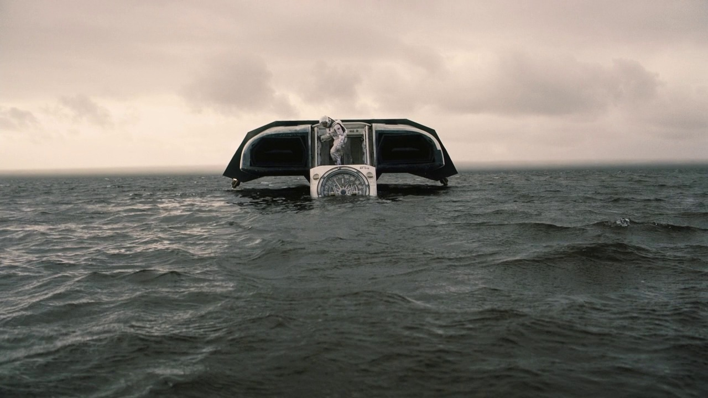
La Ranger sobre el océano de Miller, minutos antes de la ola. Eje Mundos. -

El planeta de Mann: hielo y nubes heladas hasta el horizonte. Eje Mundos. -
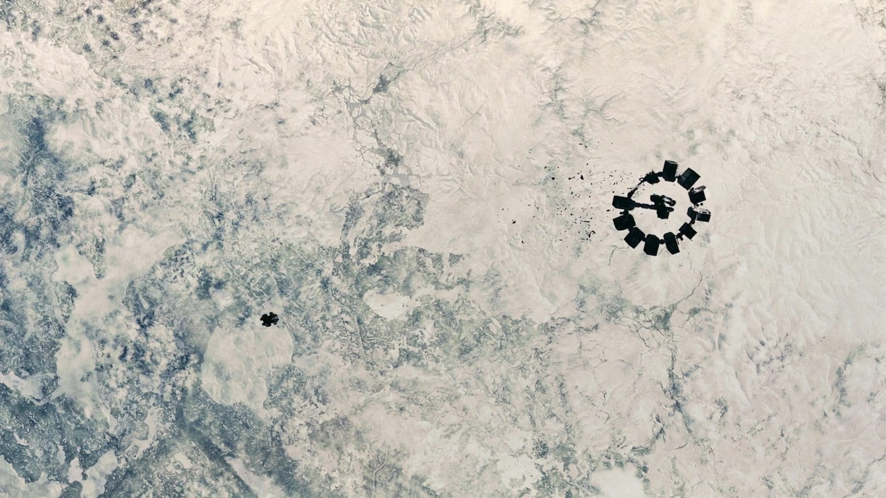
Exploración de la superficie del planeta de Mann. Eje Mundos. -

El Tesseract, más allá del horizonte de Gargantúa. Eje Mundos.
{kind=link}
{kind=link}
{kind=link}
{kind=link}
Personajes
Ir a la página de Personajes-

Cooper, piloto del Endurance y padre de Murph. Eje Personajes. -

Murph, la hija de Cooper que resuelve la ecuación de la gravedad. Eje Personajes. -
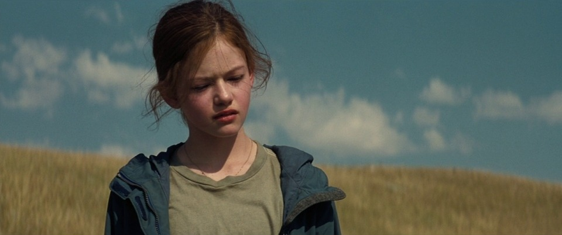
Murph niña, cuando cree que hay un «fantasma» en su habitación. Eje Personajes. -
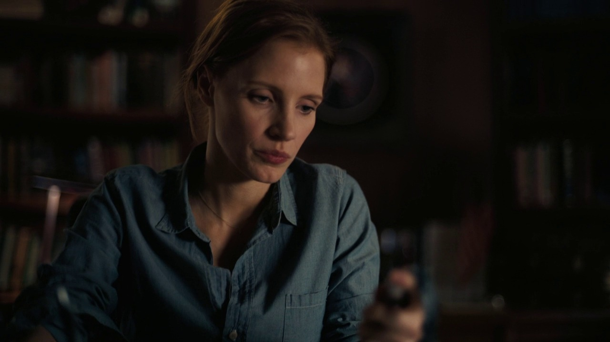
Murph adulta, ya científica junto al Profesor Brand. Eje Personajes. -
Murph anciana, al final de su vida. Eje Personajes. -

Dra. Amelia Brand, astrónoma de la tripulación del Endurance. Eje Personajes. -

Profesor Brand, mentor y responsable del «Plan A». Eje Personajes. -

Dr. Mann, «el mejor de nosotros», que falsificó sus datos. Eje Personajes. -

TARS y CASE, los robots tácticos de la misión. Eje Personajes. -
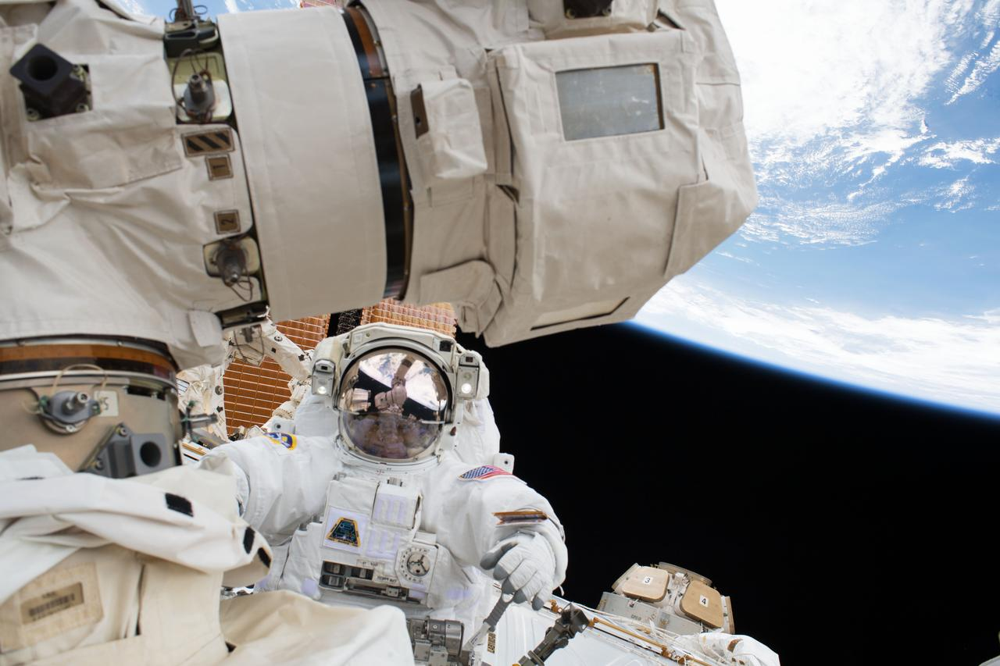
Referencia real: un astronauta de la NASA en órbita. Eje Personajes.
{kind=link}
{kind=link}
{kind=link}
{kind=link}
La Ciencia
Ir a la página de La Ciencia-
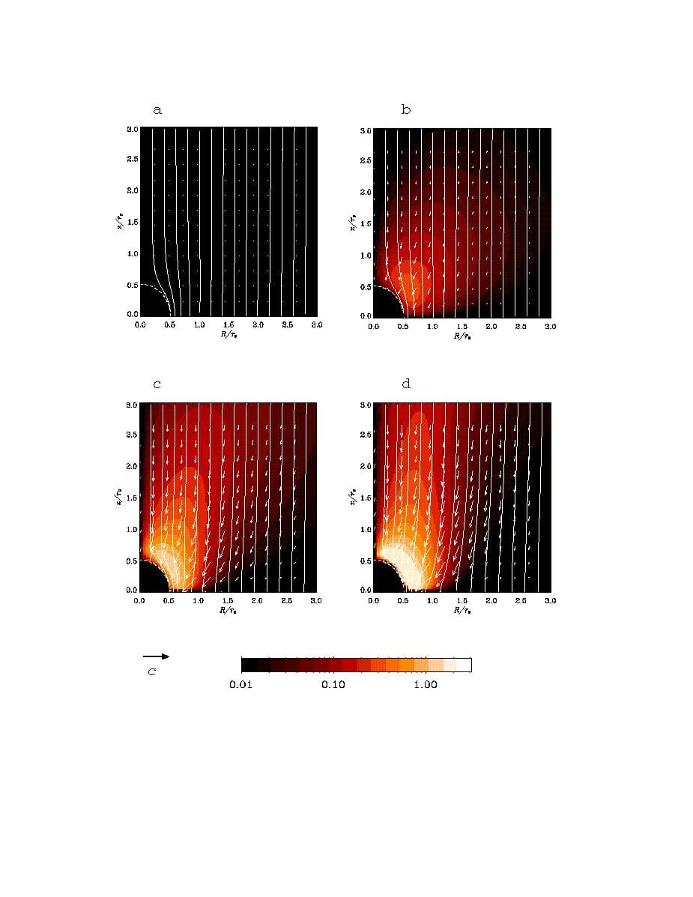
Ilustración de un agujero negro y su disco de acreción (NASA/JPL-Caltech). Eje La Ciencia. -

La primera fotografía real de un agujero negro (M87, Event Horizon Telescope). Eje La Ciencia. -
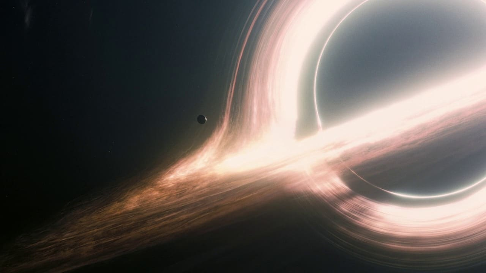
Gargantúa y su disco de acreción, con la luz curvada por la lente gravitacional. Eje La Ciencia. -
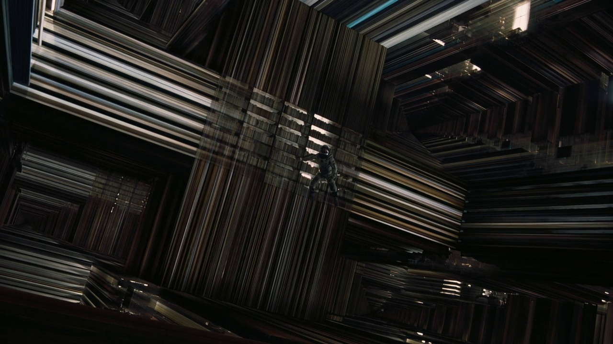
El Tesseract, donde el tiempo se recorre como si fuera un espacio. Eje La Ciencia. -
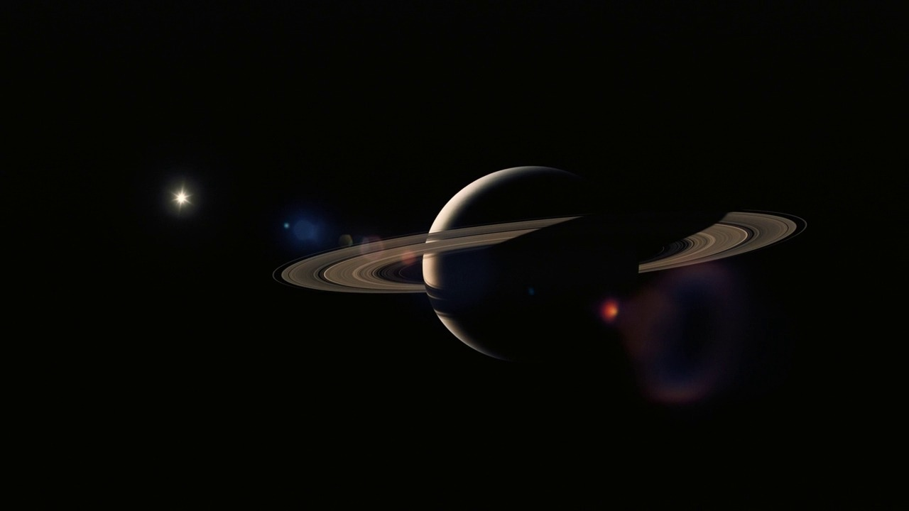
El agujero de gusano, cerca de Saturno, que abre el atajo a otra galaxia. Eje La Ciencia.
{kind=link}
{kind=link}
{kind=link}
{kind=link}
El Viaje
Ir a la página de El Viaje-
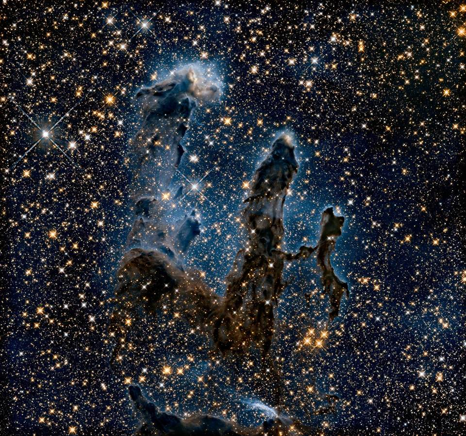
Los Pilares de la Creación (NASA, ESA/Hubble). Eje El Viaje. -
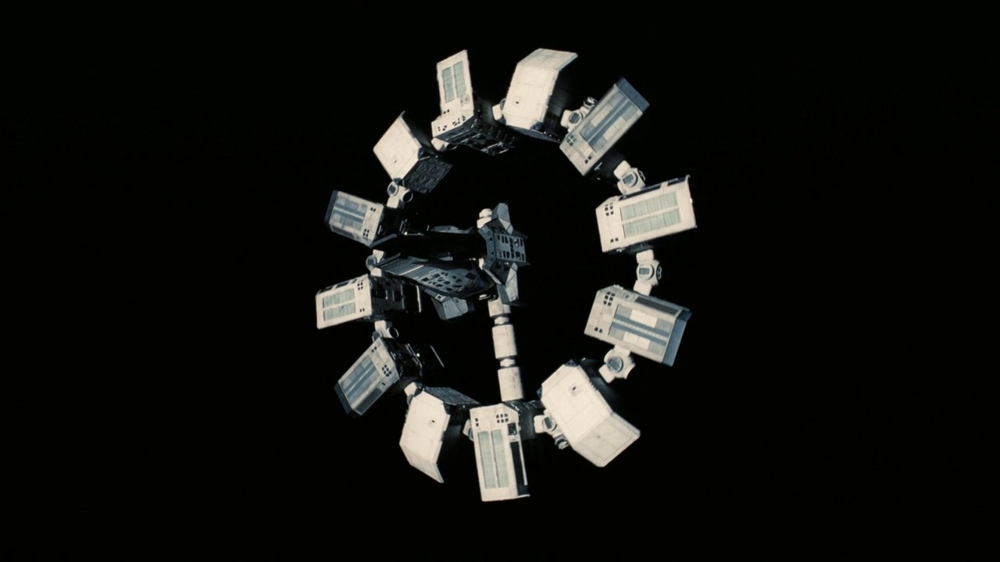
La Endurance, la nave que cruza el agujero de gusano. Eje El Viaje. -
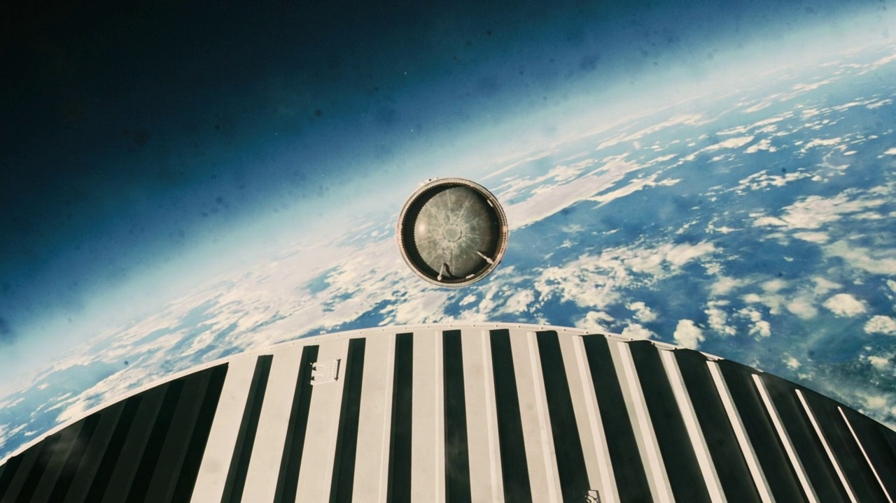
Salida de la órbita terrestre rumbo a Saturno. Eje El Viaje. -
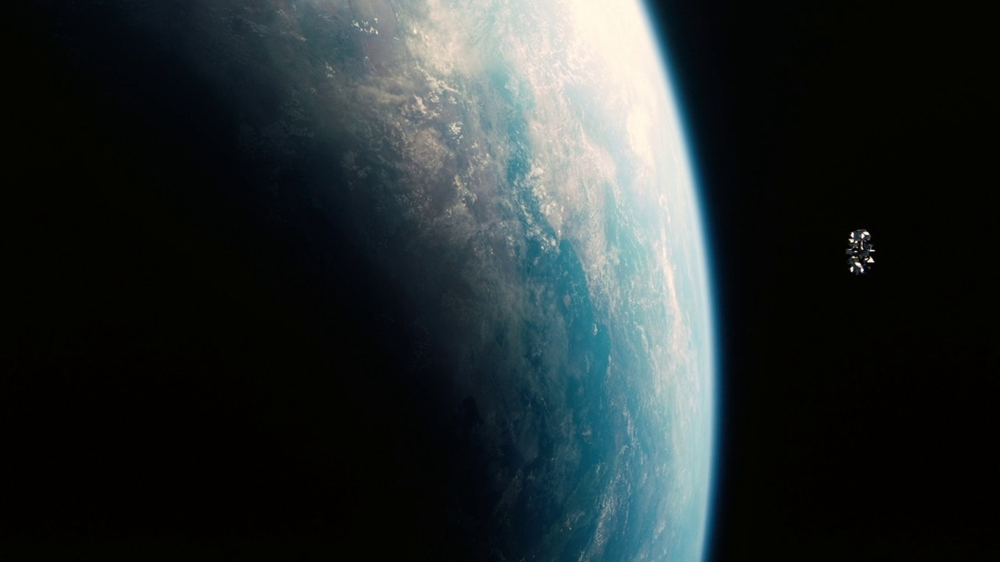
La Tierra queda atrás: la nave, un punto camino al agujero de gusano. Eje El Viaje.
{kind=link}
{kind=link}
{kind=link}
{kind=link}